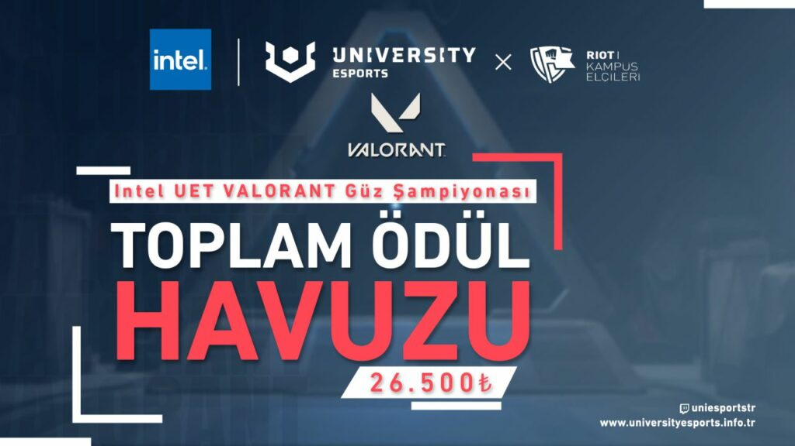
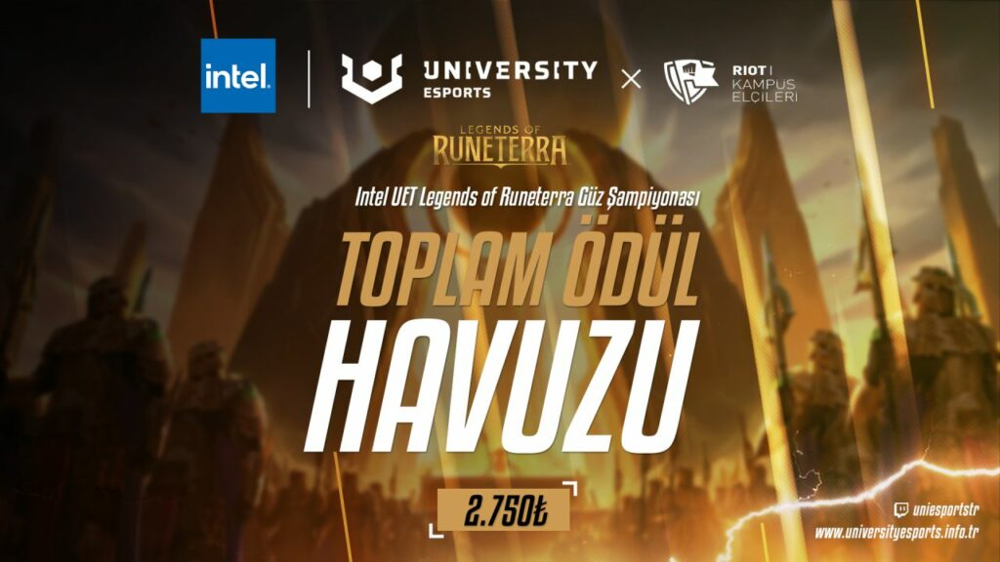
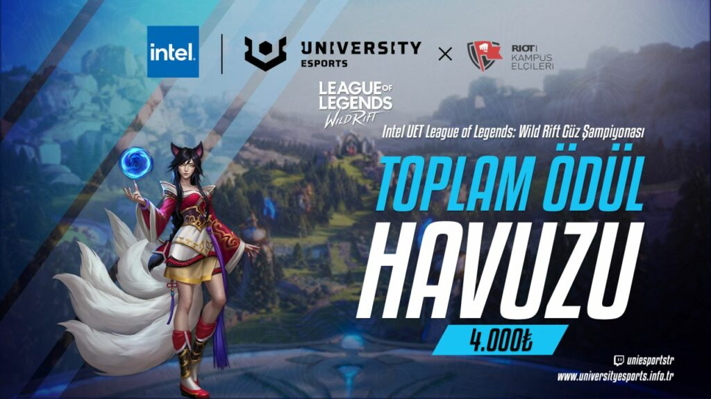
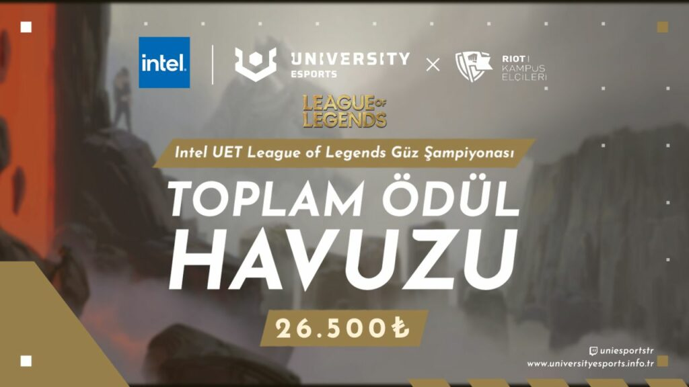
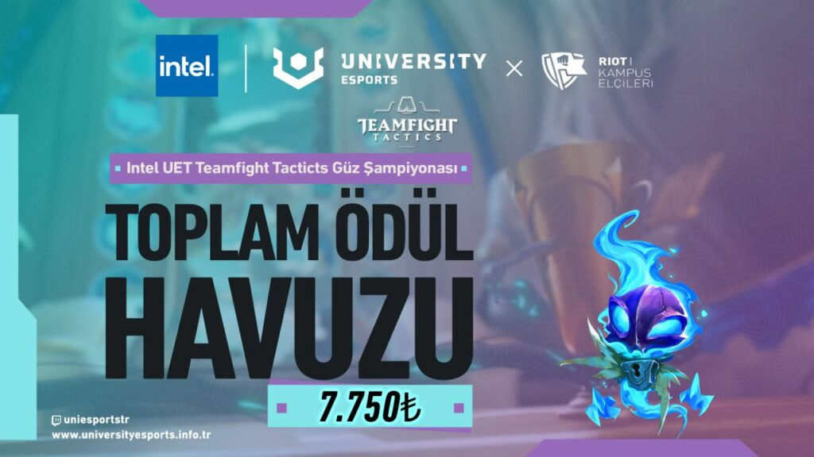
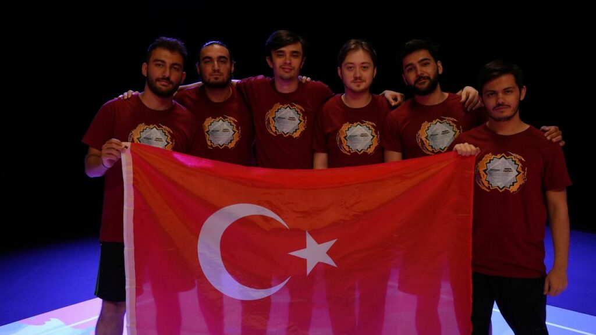
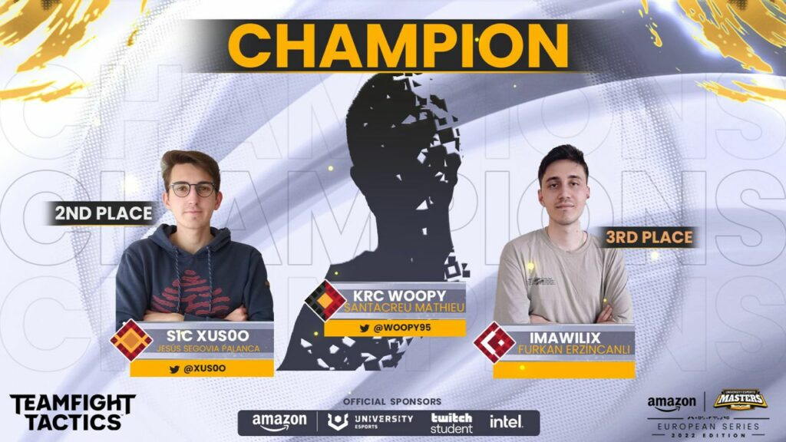

Intel UNIVERSITY Esports Türkiye’de Güz sezonu Riot Kampüs Elçileri Programı (KEP) ortaklığıyla devam ediyor
Ülkemizin üniversite öğrencilerine yerel ve uluslararası espor endüstrisinde profesyonel oyunculuktan koçluğa, hakemlikten sunuculuğa kadar kendilerini gösterme imkanı sağlayan Intel UNIVERSITY Esports Türkiye‘nin Güz Sezonu başlıyor. Turnuvalar, etkinlikler ve eğitimler 26 ülkede espor turnuvaları düzenleyen bir teknoloji şirketi olan GGTech Entertainment ve Riot Kampüs Elçileri Programı (KEP) ortaklığında yürütülecek.
Intel UNIVERSITY Esports Türkiye (UET) ve Riot Kampüs Elçileri Programı (KEP) ortaklığı Türkiye’nin yedi bölgesinde yer alan üniversiteleri heyecanı yüksek espor turnuvaları ile adil bir rekabet ortamı içerisinde buluşturmaya ve birçok öğrenciye tecrübe ve iş imkanı sunmaya devam edecek.
Intel UNIVERSITY Esports Türkiye nedir?
Intel UNIVERSITY Esports Türkiye, ödül kazanma ve uluslararası yarışmalara katılma şansı elde etmek için üniversite düzeyindeki en iyi takımları bir dizi turnuvada yarışmak üzere bir araya getiren bir espor müsabakasıdır.
Güz döneminde ülkemizin dört bir yanından 140’dan fazla üniversiteden toplamda 2500’ün üzerinde oyuncu kitlesine ulaşılması hedeflenmektedir. Bizleri bekleyen turnuva süreci boyunca canlı yayınlarla takipçilerin ve oyuncuların iç içe olduğu aktif bir topluluk oluşturulması da yeni sezon hedeflerinin arasında yer almaktadır.
Kampüs Elçileri Programı (KEP) nedir?
Üniversite öğrencileri, Türkiye’deki geniş oyun topluluğunun önemli parçalarındandır. Bu kapsamda üniversitelerde Riot Games oyunları ve espor ile ilgilenen oyunculara destek olarak oyun deneyimini geliştirmek de aynı oranda önem taşır. Riot Kampüs Elçileri, üniversitelerde belirlenmiş elçiler ile birlikte çalışarak bunun gerçekleşmesine olanak kılan bir programdır.
UNIVERSITY Esports Masters nedir?
UNIVERSITY Esports Masters (UEM), Avrupa’dan kendi üniversitelerini ve ülkelerini temsil eden takımların üniversiteler arası Avrupa şampiyonu unvanı elde etmek için mücadele ettiği espor ligidir. Bu lig, her ülkenin kendi içerisinde düzenlediği ulusal turnuvaları kazanan takımların toplanması ile oluşur.
Intel UNIVERSITY Esports Türkiye’de de UEM’de yer alan oyunların turnuvalarına temsilci çıkarmak için ulusal şampiyonlar organize etmektedir. Bu şampiyonalarda başarı gösteren takımlar her sene UEM’de mücadele etmeye hak kazanır.
Yeni sezon ve yeni heyecan
Intel UNIVERSITY Esports Türkiye, Güz dönemi boyunca 5 farklı Riot Games oyununda 5 turnuva ve toplam 67.000₺’yi aşan ödül havuzu ile rekabet seviyesini hiç olmadığı kadar aktif tutacak. League of Legends, VALORANT, Team Fight Tactics, Legends of Runeterra ve League of Legends: Wild Rift’te üniversite öğrencileri bir yandan yeteneklerini gösterirken bir yandan da oynanan müsabakaları hem canlı yayınlardan hem de sosyal medya içeriklerinden takip etme fırsatı yakalayacaklar.
Bu sezon düzenlenecek olan League of Legends, Teamfight Tactics ve VALORANT turnuvalarında derece yapan ilk 2 takım/oyuncu, Bahar döneminde gerçekleşecek olan University Esports Masters’ta ülkemizi ve üniversitelerini temsil etmek için fırsat yakalayacaklar.
Yalnızca oyuncular değil, üniversite espor kulüpleri de kazanacak
Intel UET ve KEP birlikteliğinde ilerleyen bu serüvenin şüphesiz en önemli parçası üniversite espor kulüpleri. Halihazırda üniversite espor kulüplerinde görev alan öğrencilerin Intel UET projelerinde çalışma fırsatları devam ederken, bu sezon Intel UET tarafından düzenlenen ulusal şampiyonlarda derece yapan takım/oyuncuların temsil ettikleri üniversite espor kulüplerine Intel UET platformunda kendi üniversitesi için yapacakları turnuvalar adına ödül bütçesi desteği sağlanacak.
Avrupa’dan başarılar gelmeye devam ediyor
Her sezonda olduğu gibi geçtiğimiz sezonda da Avrupa’da ülkemizden söz ettirmeyi başardık. University Esports Masters'da League of Legends ve Teamfight Tactics oyunlarında ülke temsilcilerimiz göğüsümüzü kabarttı.
Erciyes Üniversitesi takımı ERU Yenilmezler, başarının bir tesadüf olmadığını Avrupa’da da kanıtladı. Temsilcimiz University UEM’de İspanyadaki finallere gitmeye hak kazandı ve finallerde bizlere unutulmaz anlar yaşatarak Avrupa üçüncüsü oldu.
Bir diğer Avrupa başarımız ise Teamfight Tactics oyununda Çukurova Üniversitesi öğrencisi ImAwilix’ten geldi. Başarının strateji olmadan gelmeyeceğini tüm izleyenlere kanıtlayan temsilcimiz, University Esports Masters’ta vermiş olduğu mücadeleler sonucunda Avrupa üçüncülüğü derecesini elde etti.

Diğer Kategoriler

Oyun Haberleri